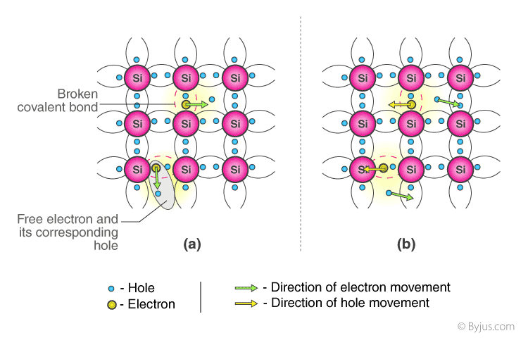
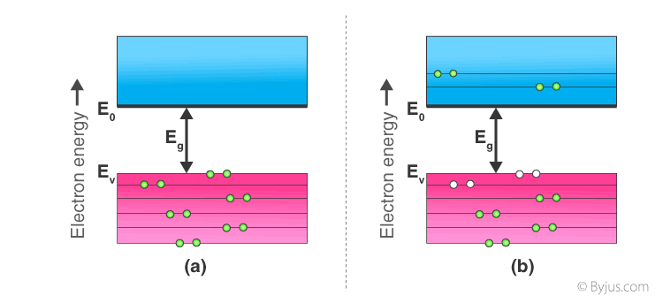

Intrinsic semiconductor
An intrinsic type of semiconductor material is made to be very pure chemically. It is made up of only a single type of element. Conduction Mechanism in Intrinsic Semiconductors
 Conduction Mechanism in Case of Intrinsic Semiconductors- In absence of electric field
- In presence of electric Field
Germanium (Ge) and Silicon (Si) are the most common type of intrinsic semiconductor elements. They have four valence electrons (tetravalent). They are bound to the atom by covalent bond at absolute zero temperature. When the temperature rises, due to collisions, few electrons are unbounded and become free to move through the lattice, thus creating an absence in its original position (hole). These free electrons and holes contribute to the conduction of electricity in the semiconductor. The negative and positive charge carriers are equal in number. The thermal energy is capable of ionizing a few atoms in the lattice, and hence their conductivity is less.
The Lattice of Pure Silicon Semiconductor at Different Tempertures
- At absolute zero kelvin temperature:
- Above absolute temperature:
Energy Band Diagram of Intrinsic Semiconductor
- Intrinsic Semiconductor at T=0 Kelvin ,Behaves like an insulator
- At t>0 ,four theramally generted electron pairs
In intrinsic semiconductors, current flows due to the motion of free electrons as well as holes. The total current is the sum of the electron current Ie due to thermally generated electrons and the hole current Ih
Total Current(I)=Ie+IhFor an intrinsic semiconductor, at finite temperature, the probability of electrons to exist in conduction band decreases exponentially with increasing bandgap (Eg)
n=n0e-Eg/2.kb.TWhere,
- EgEnergy Bandgap
- KbBoltzmann's constants